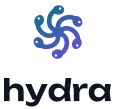
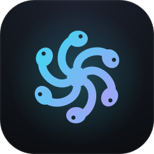
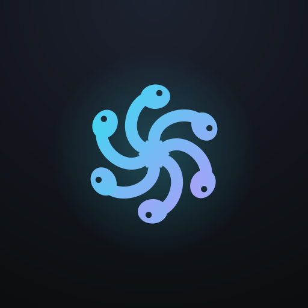
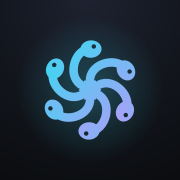

<title>Hydra Brand Book</title>
<meta name="claude:viewport-fit-sides" content="cover">
<link rel="preconnect" href="https://fonts.googleapis.com">
<link rel="preconnect" href="https://fonts.gstatic.com" crossorigin>
<link rel="stylesheet" href="https://fonts.googleapis.com/css2?family=Geist:wght@400;500;600&family=Geist+Mono:wght@400;500&family=Unbounded:wght@400;500;600&display=swap">
<style>
/* Layout: one 1080px column of numbered-free chapters, each a full-width band
   whose ground alternates between Abyss and Plate, like the app's surfaces. */
:root {
  color-scheme: dark;
  --abyss: #12151c;      /* Midnight --surface-0 */
  --trench: #0b0d10;     /* Deep --surface-0 */
  --plate: #171b24;      /* Midnight --surface-1 */
  --raise: #1d2230;      /* Midnight --surface-2 */
  --line: #2a3040;
  --bone: #e8edf7;
  --muted: #a7b2c4;
  --dim: #8892a4;
  --cyan: #38d9f0;
  --violet: #b39bf8;
  --paper: #f5f7fb;
  --ink: #0f1520;
  --deep-cyan: #0d7287;
  --deep-violet: #6b4bd6;
  --danger: #f87171;
  --claude: #f0a97a; --codex: #5ee9a4; --cursor: #62b8f5; --grok: #f57fa8; --copilot: #b087f0; --kilocode: #ffd166;

  --display: "Unbounded", "Geist", ui-sans-serif, system-ui, sans-serif;
  --text: "Geist", ui-sans-serif, system-ui, -apple-system, "Segoe UI", sans-serif;
  --mono: "Geist Mono", ui-monospace, SFMono-Regular, Menlo, monospace;
}
* { box-sizing: border-box; }
body { background: var(--abyss); color: var(--bone); font: 16px/1.6 var(--text); -webkit-font-smoothing: antialiased; }
.band { padding-block: 72px; padding-left: max(16px, env(safe-area-inset-left, 0px)); padding-right: max(16px, env(safe-area-inset-right, 0px)); border-top: 1px solid var(--line); }
.band.alt { background: var(--plate); }
.wrap { max-width: 1080px; margin: 0 auto; display: grid; gap: 32px; }
h1, h2, h3 { font-family: var(--display); font-weight: 500; letter-spacing: -0.02em; line-height: 1.15; text-wrap: balance; margin: 0; }
h2 { font-size: clamp(1.6rem, 3.4vw, 2.3rem); }
h3 { font-size: 1.05rem; letter-spacing: -0.01em; }
p { margin: 0; max-width: 64ch; color: var(--muted); }
.eyebrow { font: 500 0.75rem/1 var(--mono); letter-spacing: 0.14em; text-transform: uppercase; color: var(--cyan); }
.head { display: grid; gap: 12px; }
code, .mono { font-family: var(--mono); font-size: 0.86em; }
code { color: var(--bone); background: var(--raise); padding: 0.1em 0.4em; border-radius: 5px; }
.grid { display: grid; gap: 16px; grid-template-columns: repeat(auto-fill, minmax(min(100%, 300px), 1fr)); }
.tile { display: grid; gap: 10px; align-content: start; min-width: 0; }
.stage { display: grid; place-items: center; border-radius: 14px; border: 1px solid var(--line); background: var(--trench); padding: 28px; min-height: 180px; }
.stage.light { background: var(--paper); border-color: #d8dee9; }
.stage img { display: block; }
.cap { font-size: 0.82rem; color: var(--dim); }
.cap b { color: var(--bone); font-weight: 500; }

/* Hero */
.hero { margin-top: calc(-1 * env(safe-area-inset-top, 0px)); padding-top: calc(env(safe-area-inset-top, 0px) + 80px); padding-bottom: 80px; border-top: 0;
  background: radial-gradient(60% 80% at 22% 40%, rgb(56 217 240 / 0.13), transparent 70%), radial-gradient(50% 70% at 80% 10%, rgb(179 155 248 / 0.08), transparent 70%), var(--abyss); }
.hero .wrap { grid-template-columns: minmax(0, 1fr) minmax(0, 1.2fr); align-items: center; gap: 48px; }
.hero-mark { width: 100%; max-width: 360px; justify-self: center; aspect-ratio: 1; }
.hero h1 { font-size: clamp(3.4rem, 9vw, 6.4rem); font-weight: 600; letter-spacing: -0.03em; }
.hero .tag { font-family: var(--display); font-weight: 400; font-size: clamp(1.1rem, 2.2vw, 1.45rem); color: var(--bone); margin-top: 14px; }
.hero .roll { font-family: var(--mono); font-size: 0.85rem; letter-spacing: 0.06em; color: var(--dim); margin-top: 18px; }
.hero .roll span { white-space: nowrap; }

/* Anatomy / living mark */
.anatomy { display: grid; grid-template-columns: minmax(0, 300px) minmax(0, 1fr); gap: 40px; align-items: center; }
.live-stage { aspect-ratio: 1; min-height: 0; padding: 20px; }
.live-stage svg { width: 100%; height: auto; }
.heads { display: grid; grid-template-columns: repeat(auto-fill, minmax(150px, 1fr)); gap: 8px; }
.head-btn { display: flex; align-items: center; gap: 10px; padding: 10px 12px; border-radius: 10px; border: 1px solid var(--line); background: var(--abyss); color: var(--muted); font: 500 0.9rem var(--text); cursor: pointer; text-align: left; }
.head-btn:hover { border-color: #3a4256; color: var(--bone); }
.head-btn[aria-pressed="true"] { color: var(--bone); border-color: var(--c); background: color-mix(in oklab, var(--c) 10%, var(--abyss)); }
.head-btn:focus-visible { outline: 2px solid var(--cyan); outline-offset: 2px; }
.dot { width: 10px; height: 10px; border-radius: 50%; background: var(--c); flex-shrink: 0; opacity: 0.45; }
.head-btn[aria-pressed="true"] .dot { opacity: 1; box-shadow: 0 0 0 3px color-mix(in oklab, var(--c) 25%, transparent); }
.head-btn .pos { margin-left: auto; font: 0.72rem var(--mono); color: var(--dim); }
.live-status { font: 0.85rem var(--mono); color: var(--dim); min-height: 1.4em; }
@keyframes breathe { 0%, 100% { opacity: 0.72; } 50% { opacity: 1; } }
@keyframes turn { to { transform: rotate(360deg); } }
.awake .body { transform-origin: 32px 32px; animation: turn 36s linear infinite; }
.lit { animation: breathe 2.4s ease-in-out infinite; }
.idle { opacity: 0.4; }

/* Clear space and sizes */
.space { position: relative; padding: 34px; border: 1px dashed color-mix(in oklab, var(--cyan) 55%, transparent); border-radius: 6px; }
.space::after { content: "x"; position: absolute; top: 8px; left: 50%; transform: translateX(-50%); font: 0.72rem var(--mono); color: var(--cyan); }
.ladder { display: flex; flex-wrap: wrap; align-items: end; gap: 28px; }
.ladder figure { margin: 0; display: grid; justify-items: center; gap: 8px; }
.ladder figcaption { font: 0.75rem var(--mono); color: var(--dim); }

/* Colour */
.swatches { display: grid; grid-template-columns: repeat(auto-fill, minmax(min(100%, 230px), 1fr)); gap: 12px; }
.swatch { border-radius: 12px; border: 1px solid var(--line); overflow: hidden; background: var(--abyss); min-width: 0; }
.chip { height: 96px; background: var(--c); }
.swatch div:last-child { padding: 12px 14px; display: grid; gap: 2px; }
.swatch b { font-weight: 600; }
.swatch span { font: 0.78rem var(--mono); color: var(--dim); overflow-wrap: anywhere; }
.venom { height: 88px; border-radius: 12px; background: linear-gradient(135deg, var(--cyan), var(--violet)); display: flex; align-items: end; justify-content: space-between; padding: 12px 16px; font: 500 0.8rem var(--mono); color: var(--ink); }
.venom.day { background: linear-gradient(135deg, var(--deep-cyan), var(--deep-violet)); color: var(--paper); }
.spectrum { display: grid; grid-template-columns: repeat(6, minmax(0, 1fr)); border-radius: 12px; overflow: hidden; }
.spectrum div { background: var(--c); color: var(--ink); padding: 40px 10px 10px; font: 500 0.75rem var(--mono); overflow-wrap: anywhere; }

/* Type */
.specimen { display: grid; grid-template-columns: minmax(0, 220px) minmax(0, 1fr); gap: 24px; padding-block: 24px; border-top: 1px solid var(--line); align-items: baseline; }
.specimen:first-of-type { border-top: 0; }
.specimen .meta { display: grid; gap: 4px; font-size: 0.85rem; color: var(--dim); }
.specimen .meta b { color: var(--bone); font-weight: 500; font-size: 1rem; }
.sample { min-width: 0; overflow-wrap: anywhere; }
.s-display { font: 500 clamp(1.8rem, 4.5vw, 3rem)/1.1 var(--display); letter-spacing: -0.02em; }
.s-text { font: 400 1.05rem/1.65 var(--text); color: var(--muted); }
.s-text strong { color: var(--bone); font-weight: 600; }
.s-mono { font: 400 0.92rem/1.7 var(--mono); color: var(--muted); white-space: pre-wrap; }
.s-mono .ok { color: var(--codex); } .s-mono .c { color: var(--cyan); }

/* Icons */
.icons { display: flex; flex-wrap: wrap; align-items: end; gap: 28px; }
.icons figure { margin: 0; display: grid; justify-items: center; gap: 8px; }
.icons figcaption { font: 0.75rem var(--mono); color: var(--dim); text-align: center; }
.circle { border-radius: 50%; }

/* Don't */
.dont .stage { position: relative; min-height: 160px; }
.dont .stage::before { content: "✕"; position: absolute; top: 10px; right: 12px; width: 22px; height: 22px; display: grid; place-items: center; border-radius: 50%; background: var(--danger); color: var(--ink); font: 700 0.75rem var(--text); }
.busy { background: repeating-linear-gradient(45deg, #3d6b5a 0 14px, #c58a4a 14px 28px, #4f63a8 28px 42px) !important; }
.mid { background: #5d7d8c !important; }

/* Voice */
.quote { font-family: var(--display); font-size: clamp(1.5rem, 4vw, 2.6rem); font-weight: 500; letter-spacing: -0.02em; line-height: 1.2; }
.quote em { font-style: normal; background: linear-gradient(135deg, var(--cyan), var(--violet)); -webkit-background-clip: text; background-clip: text; color: transparent; }
.rules { display: grid; grid-template-columns: repeat(auto-fill, minmax(260px, 1fr)); gap: 16px; }
.rules div { border-left: 2px solid var(--line); padding-left: 14px; display: grid; gap: 4px; }
.rules b { font-weight: 500; }
footer.band { padding-block: 40px; }
footer p { font-size: 0.85rem; color: var(--dim); max-width: none; }

@media (max-width: 760px) {
  .hero .wrap, .anatomy, .specimen { grid-template-columns: minmax(0, 1fr); }
  .hero-mark { max-width: 240px; }
  .spectrum { grid-template-columns: repeat(3, minmax(0, 1fr)); }
  .band { padding-block: 52px; }
}
@media (prefers-reduced-motion: reduce) { .awake .body, .lit { animation: none; } }
</style>

<section class="band hero">
  <div class="wrap">
    
    <div>
      <p class="eyebrow">Brand book · v1</p>
      <h1>hydra</h1>
      <p class="tag">Many heads. One console.</p>
      <p class="roll"><span>claude</span> · <span>codex</span> · <span>cursor</span> · <span>grok</span> · <span>copilot</span> · <span>kilo</span></p>
    </div>
  </div>
</section>

<section class="band alt">
  <div class="wrap">
    <div class="head">
      <p class="eyebrow">The idea</p>
      <h2>Six heads, one body</h2>
      <p>Hydra runs six coding agents from one browser. The mark says exactly that. Six necks leave a single hexagonal core and curl clockwise, work flowing outward. Each head is a provider, in <code>PROVIDER_IDS</code> order, clockwise from Claude at two o'clock. The necks start inside the core, so it reads as one animal and never as six things orbiting a dot.</p>
    </div>
    <div class="anatomy">
      <div class="stage live-stage" id="live-stage"></div>
      <div class="head">
        <h3>The living mark</h3>
        <p>In the app, the sidebar mark is also a fleet gauge. Heads with a run in flight light up in their agent colour and breathe, idle heads go quiet, and the body turns once every 36 seconds. With reduced motion it stops moving, and the colours still show the state. Toggle agents to try it.</p>
        <div class="heads" id="heads" role="group" aria-label="Agents running"></div>
        <p class="live-status" id="live-status" aria-live="polite"></p>
      </div>
    </div>
  </div>
</section>

<section class="band">
  <div class="wrap">
    <div class="head">
      <p class="eyebrow">Mark</p>
      <h2>Variants</h2>
      <p>The gradient mark is the default. The spectrum mark is reserved for moments where the agents themselves are the subject, such as the chat landing or a splash. Below 24&nbsp;px, switch to the small cut: no eyes, heavier necks, rounder heads.</p>
    </div>
    <div class="grid">
      <div class="tile"><div class="stage"></div><p class="cap"><b>Primary</b> · hydra-mark.svg</p></div>
      <div class="tile"><div class="stage light"></div><p class="cap"><b>Primary on light</b> · hydra-mark-daylight.svg</p></div>
      <div class="tile"><div class="stage"></div><p class="cap"><b>Spectrum</b> · hero moments only</p></div>
      <div class="tile"><div class="stage"></div><p class="cap"><b>One colour</b> · Hydra Cyan</p></div>
      <div class="tile"><div class="stage"></div><p class="cap"><b>Knock-out</b> · Bone on dark</p></div>
      <div class="tile"><div class="stage light"></div><p class="cap"><b>Knock-out</b> · Ink on light</p></div>
    </div>
  </div>
</section>

<section class="band alt">
  <div class="wrap">
    <div class="head">
      <p class="eyebrow">Lockups</p>
      <h2>Mark and wordmark</h2>
      <p>The wordmark is lowercase <b>hydra</b> in Unbounded SemiBold, tracked −10 and outlined. In the horizontal lockup its x-height centres on the core, and the gap equals one head length. Use the outlined files rather than resetting the wordmark in live text.</p>
    </div>
    <div class="grid" style="grid-template-columns: repeat(auto-fill, minmax(min(100%, 420px), 1fr));">
      <div class="tile"><div class="stage"></div><p class="cap"><b>Horizontal</b> · hydra-lockup-dark.svg</p></div>
      <div class="tile"><div class="stage light"></div><p class="cap"><b>Horizontal</b> · hydra-lockup-daylight.svg</p></div>
      <div class="tile"><div class="stage"></div><p class="cap"><b>Stacked</b> · hydra-lockup-stacked-dark.svg</p></div>
      <div class="tile"><div class="stage light"></div><p class="cap"><b>Stacked</b> · hydra-lockup-stacked-daylight.svg</p></div>
    </div>
  </div>
</section>

<section class="band">
  <div class="wrap">
    <div class="head">
      <p class="eyebrow">Space and size</p>
      <h2>Room to breathe</h2>
      <p>Keep clear space of one head length, <span class="mono">x</span> (about 3/16 of the mark's height), on every side. The eyed mark goes no smaller than 28&nbsp;px. The small cut holds down to 16&nbsp;px. The horizontal lockup goes no narrower than 96&nbsp;px.</p>
    </div>
    <div class="ladder">
      <figure><div class="space"></div><figcaption>clear space = x</figcaption></figure>
      <figure><figcaption>64</figcaption></figure>
      <figure><figcaption>40</figcaption></figure>
      <figure><figcaption>28 · min</figcaption></figure>
      <figure><figcaption>24 · small cut</figcaption></figure>
      <figure><figcaption>16</figcaption></figure>
    </div>
  </div>
</section>

<section class="band alt">
  <div class="wrap">
    <div class="head">
      <p class="eyebrow">Colour</p>
      <h2>The palette is the theme</h2>
      <p>Every brand colour is already a token in the console's themes. The brand only names them and adds one gradient, Venom, which runs from Hydra Cyan to Venom Violet at 135°. Use it on the mark, never as a text fill in the UI or a large background. On light grounds it steps down to the Daylight accents.</p>
    </div>
    <div class="swatches">
      <div class="swatch"><div class="chip" style="--c: var(--cyan)"></div><div><b>Hydra Cyan</b><span>#38d9f0 · --accent</span></div></div>
      <div class="swatch"><div class="chip" style="--c: var(--violet)"></div><div><b>Venom Violet</b><span>#b39bf8 · --violet</span></div></div>
      <div class="swatch"><div class="chip" style="--c: var(--abyss); border-bottom: 1px solid var(--line)"></div><div><b>Abyss</b><span>#12151c · Midnight --surface-0</span></div></div>
      <div class="swatch"><div class="chip" style="--c: var(--trench); border-bottom: 1px solid var(--line)"></div><div><b>Trench</b><span>#0b0d10 · Deep --surface-0</span></div></div>
      <div class="swatch"><div class="chip" style="--c: var(--bone)"></div><div><b>Bone</b><span>#e8edf7 · Midnight --fg</span></div></div>
      <div class="swatch"><div class="chip" style="--c: var(--ink)"></div><div><b>Ink</b><span>#0f1520 · Daylight --fg</span></div></div>
      <div class="swatch"><div class="chip" style="--c: var(--deep-cyan)"></div><div><b>Deep Cyan</b><span>#0d7287 · Daylight --accent</span></div></div>
      <div class="swatch"><div class="chip" style="--c: var(--deep-violet)"></div><div><b>Deep Violet</b><span>#6b4bd6 · Daylight --violet</span></div></div>
    </div>
    <div class="grid" style="grid-template-columns: repeat(auto-fill, minmax(min(100%, 320px), 1fr));">
      <div class="venom"><span>Venom · dark</span><span>--brand-from → --brand-to</span></div>
      <div class="venom day"><span>Venom · daylight</span><span>#0d7287 → #6b4bd6</span></div>
    </div>
    <div class="head">
      <h3>Agent spectrum</h3>
      <p>The six agent hues belong to the agents. The brand borrows them only for the spectrum mark and the living mark, where a head's colour tells you which provider it is.</p>
    </div>
    <div class="spectrum">
      <div style="--c: var(--claude)">claude<br>#f0a97a</div>
      <div style="--c: var(--codex)">codex<br>#5ee9a4</div>
      <div style="--c: var(--cursor)">cursor<br>#62b8f5</div>
      <div style="--c: var(--grok)">grok<br>#f57fa8</div>
      <div style="--c: var(--copilot)">copilot<br>#b087f0</div>
      <div style="--c: var(--kilocode)">kilocode<br>#ffd166</div>
    </div>
  </div>
</section>

<section class="band">
  <div class="wrap">
    <div class="head">
      <p class="eyebrow">Typography</p>
      <h2>Three voices</h2>
      <p>Unbounded's wide, rounded letters echo the curl of the necks. Geist keeps a dense console legible. Geist Mono handles anything a terminal would print. All three are open-source (OFL) and load through <code>next/font</code>.</p>
    </div>
    <div>
      <div class="specimen"><div class="meta"><b>Unbounded</b>Display · 500–600<br><span class="mono">--font-display</span></div><div class="sample s-display">Pipeline overview</div></div>
      <div class="specimen"><div class="meta"><b>Geist</b>Text · 400–600<br><span class="mono">--font-sans</span></div><div class="sample s-text"><strong>Codex is working.</strong> It has edited four files in <span class="mono">server/src/services</span> and is running the test suite. You'll see each result as it streams.</div></div>
      <div class="specimen"><div class="meta"><b>Geist Mono</b>Code · 400–500<br><span class="mono">--font-mono</span></div><div class="sample s-mono"><span class="c">$</span> npm test --workspace server
<span class="ok">✔</span> 412 passing · 38.2s · 61.4k tokens</div></div>
    </div>
    <p>Use Unbounded for page titles and brand moments only, never for body text, labels or buttons. Set titles at weight 500 with −0.015em tracking.</p>
  </div>
</section>

<section class="band alt">
  <div class="wrap">
    <div class="head">
      <p class="eyebrow">Icons</p>
      <h2>App icon and favicons</h2>
      <p>The app tile is an Abyss plate lit from above, with a cyan bloom behind the core. The maskable icon keeps the mark inside the 80% safe circle. The tab icon is an SVG that follows the OS colour scheme, with an ICO fallback at 16, 32 and 48&nbsp;px.</p>
    </div>
    <div class="icons">
      <figure><figcaption>app tile<br>64–1024</figcaption></figure>
      <figure><figcaption>maskable 512<br>circle crop</figcaption></figure>
      <figure><figcaption>apple-touch<br>180</figcaption></figure>
      <figure><figcaption>48</figcaption></figure>
      <figure><figcaption>32</figcaption></figure>
      <figure><figcaption>16</figcaption></figure>
    </div>
  </div>
</section>

<section class="band dont">
  <div class="wrap">
    <div class="head">
      <p class="eyebrow">Misuse</p>
      <h2>Don't</h2>
    </div>
    <div class="grid">
      <div class="tile"><div class="stage"></div><p class="cap"><b>Mirror it.</b> The clockwise curl is the motion.</p></div>
      <div class="tile"><div class="stage"></div><p class="cap"><b>Stretch or squash it.</b></p></div>
      <div class="tile"><div class="stage"></div><p class="cap"><b>Recolour heads.</b> A head's colour means a provider.</p></div>
      <div class="tile"><div class="stage busy"></div><p class="cap"><b>Put the gradient on busy grounds.</b> Use Bone or Ink.</p></div>
      <div class="tile"><div class="stage mid"></div><p class="cap"><b>Use mid-tone grounds.</b> The gradient loses its edge.</p></div>
      <div class="tile"><div class="stage"></div><p class="cap"><b>Use the eyed mark under 28&nbsp;px.</b> Switch to the small cut.</p></div>
    </div>
  </div>
</section>

<section class="band alt">
  <div class="wrap">
    <div class="head">
      <p class="eyebrow">Voice</p>
      <p class="quote">Many heads. <em>One console.</em></p>
    </div>
    <div class="rules">
      <div><b>Concrete</b><p>Say what the agent is doing: "Codex is running the test suite", not "Magic is happening".</p></div>
      <div><b>Calm</b><p>A console watched for hours shouldn't shout. Status, not hype.</p></div>
      <div><b>Named</b><p>Lowercase <b>hydra</b> in the wordmark. <b>Hydra</b> in sentences.</p></div>
    </div>
  </div>
</section>

<footer class="band">
  <div class="wrap">
    <p>Every asset is generated by <span class="mono">node brand/build.mjs</span>. Change a parameter there, never an output file. See <span class="mono">brand/README.md</span> for the file index.</p>
  </div>
</footer>

<script>
/* geometry:start — injected by brand/build.mjs, do not edit */
const MARK = {"necks":["M32 26C33.05 17.04 46.78 14.38 50.66 20.34","M37.2 29C45.48 25.42 54.65 35.99 51.42 42.33","M37.2 35C44.44 40.39 39.87 53.61 32.77 53.99","M32 38C30.95 46.96 17.22 49.62 13.34 43.66","M26.8 35C18.52 38.58 9.35 28.01 12.58 21.67","M26.8 29C19.56 23.61 24.13 10.39 31.23 10.01"],"heads":[{"cx":51.37,"cy":21.43,"angle":56.99,"ex":53.33,"ey":22.07},{"cx":50.83,"cy":43.49,"angle":116.99,"ex":51.27,"ey":45.5},{"cx":31.47,"cy":54.05,"angle":176.99,"ex":29.94,"ey":55.44},{"cx":12.63,"cy":42.57,"angle":-123.01,"ex":10.67,"ey":41.93},{"cx":13.17,"cy":20.51,"angle":-63.01,"ex":12.73,"ey":18.5},{"cx":32.53,"cy":9.95,"angle":-3.01,"ex":34.06,"ey":8.56}],"core":"M35 26.8L38 32L35 37.2L29 37.2L26 32L29 26.8Z","neck":4.6,"hx":5.7,"hy":4.7,"eye":1.2};
/* geometry:end */

const AGENTS = [
  ["claude", "Claude Code"], ["codex", "Codex CLI"], ["cursor", "Cursor CLI"],
  ["grok", "Grok CLI"], ["copilot", "GitHub Copilot"], ["kilocode", "Kilo Code"],
];
const POS = ["2:00", "4:00", "6:00", "8:00", "10:00", "12:00"];
const live = new Set(["claude", "codex"]);
const NS = "http://www.w3.org/2000/svg";
const el = (name, attrs) => { const n = document.createElementNS(NS, name); for (const k in attrs) n.setAttribute(k, attrs[k]); return n; };

function render() {
  const stage = document.getElementById("live-stage");
  if (!MARK || !stage) return;
  const awake = live.size > 0;
  const svg = el("svg", { viewBox: "0 0 64 64", role: "img", "aria-label": awake ? `Living mark: ${[...live].join(", ")} running` : "Living mark at rest" });
  if (awake) svg.classList.add("awake");
  const defs = el("defs", {});
  const grad = el("linearGradient", { id: "lg", x1: 8, y1: 8, x2: 56, y2: 56, gradientUnits: "userSpaceOnUse" });
  grad.append(el("stop", { offset: 0, "stop-color": "#38d9f0" }), el("stop", { offset: 1, "stop-color": "#b39bf8" }));
  const mask = el("mask", { id: "lm", maskUnits: "userSpaceOnUse", x: 0, y: 0, width: 64, height: 64 });
  mask.append(el("rect", { width: 64, height: 64, fill: "#fff" }));
  MARK.heads.forEach((h) => mask.append(el("circle", { cx: h.ex, cy: h.ey, r: MARK.eye, fill: "#000" })));
  defs.append(grad, mask);
  const body = el("g", { class: "body", mask: "url(#lm)" });
  const paint = (i) => { const id = AGENTS[i][0]; return awake ? (live.has(id) ? `var(--${id})` : "var(--dim)") : "url(#lg)"; };
  const cls = (i) => (awake ? (live.has(AGENTS[i][0]) ? "lit" : "idle") : "");
  MARK.necks.forEach((d, i) => { const p = el("path", { d, fill: "none", stroke: paint(i), "stroke-width": MARK.neck, "stroke-linecap": "round" }); if (cls(i)) p.classList.add(cls(i)); body.append(p); });
  MARK.heads.forEach((h, i) => { const e = el("ellipse", { cx: h.cx, cy: h.cy, rx: MARK.hx, ry: MARK.hy, transform: `rotate(${h.angle} ${h.cx} ${h.cy})`, fill: paint(i) }); if (cls(i)) e.classList.add(cls(i)); body.append(e); });
  body.append(el("path", { d: MARK.core, fill: awake ? "var(--bone)" : "url(#lg)" }));
  svg.append(defs, body);
  stage.replaceChildren(svg);
  document.getElementById("live-status").textContent = awake ? `${live.size} of 6 heads awake` : "At rest. The brand gradient shows when nothing runs.";
}

const heads = document.getElementById("heads");
AGENTS.forEach(([id, name], i) => {
  const b = document.createElement("button");
  b.type = "button";
  b.className = "head-btn";
  b.id = `head-${id}`;
  b.style.setProperty("--c", `var(--${id})`);
  b.setAttribute("aria-pressed", String(live.has(id)));
  b.innerHTML = `<span class="dot"></span>${name}<span class="pos">${POS[i]}</span>`;
  b.addEventListener("click", () => {
    live.has(id) ? live.delete(id) : live.add(id);
    b.setAttribute("aria-pressed", String(live.has(id)));
    render();
  });
  heads.append(b);
});
render();
</script>
